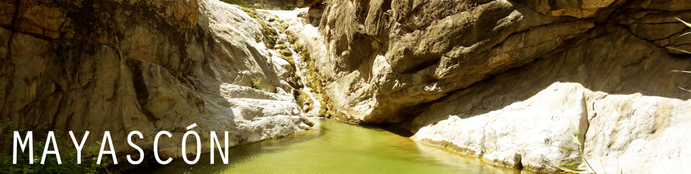
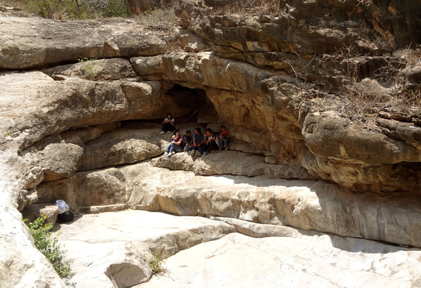
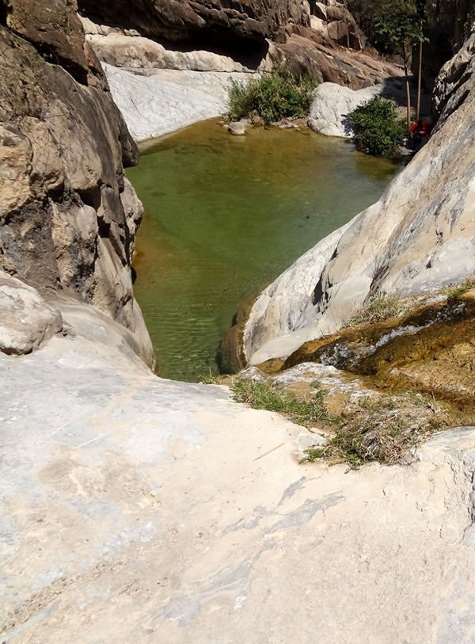
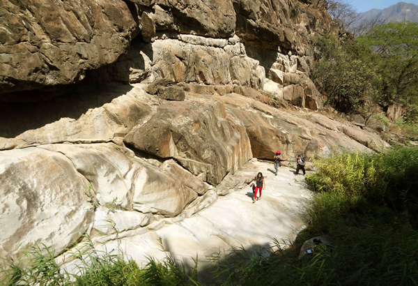
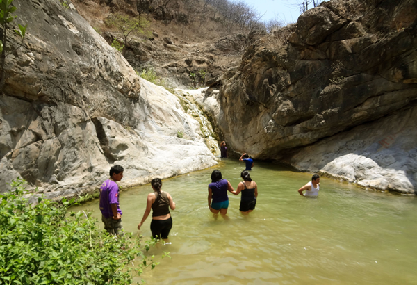

Hiking, Lagoons, and Camping
Take a day trip or an overnight trip to the Mayascon lagoons! After arriving to the Mayascon community, it’s about a 45 minute walk to the gaps. This area has several small lagoons, plants, and animals along the way. Be sure to bring your swimwear to cool down from your hike, as well as bug spray and sunblock!
Flat camping spots are available for those who wish to stay overnight. Remember, since this area is not as developed for tourists, be sure to pack out any waste you bring to the area so that other people can enjoy the Mayascon Lagoons after you. Don’t miss out on the opportunity to escape for a bit and enjoy the nature of northern Peru!


| Location |
| A 45-minute walk from the community of Mayascon. Mayascon is about 65 km from Chiclayo, or about a 2.5- hour drive. |
| Activities |
| Hiking, camping, swimming, picnics, etc. |

